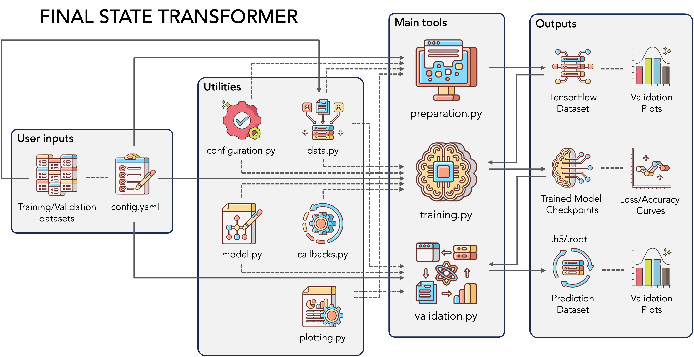

The Code

Source Code and Installation
The source code for the FST toolkit is hosted on GitHub. Users can access the repository by visiting the final-state-transformer GitHub page. The repository contains all the scripts, utilities and documentation needed to understand and utilize the toolkit. To install the FST toolkit, follow the following steps to ensure smooth setup. Before installation, ensure you have the following software installed on your system: Python 3.9.13 or higher, Git, pip (Python package installer).
Start by cloning the FST repository from GitHub to your local machine. Open your terminal and execute the following commands:
git clone git@github.com:dev-geof/final-state-transformer.git
cd final-state-transformer
It is recommended to install the FST toolkit within a virtual environment. The python "venv" environment is a lightweight solution to install the necessary dependencies.
python3 -m venv env
source env/bin/activate
python -m pip install -e . -r requirements.txt
Software Implementation
The FST software features a modular python architecture designed to facilitate the implementation, the training and the evaluation of Transformer encoder networks. The core structure is organized into three main tools and several utilities.
Main Tools and Utilities
The main tools provide essential functionalities for various stages of the machine learning pipeline. These stages include data preparation, model training, and evaluation. Data preparation tools ensure that raw data is cleaned, formatted, and features are engineered for optimal input into the model. Training tools encompass scripts and utilities for initiating and monitoring the training process, optimizing hyper- parameters, and supporting distributed training across CPUs or GPUs. Evaluation tools offer methods for calculating performance metrics, validating models, and interpreting model outputs.
The utilities support the main tools and enhance their functionality. The Model utilities define and manage the architecture and parameters of Transformer-based models, including saving and loading models. Plotting utilities provide tools for visualizing training progress, model performance, and generating interactive plots. Data utilities handle efficient loading, batching, and management of datasets. Configu- ration utilities manage settings and parameters through configuration files, ensuring consistent experiment setups. Finally, Callbacks offer functions for logging progress, early stopping, and checkpointing models during training, improving the training process’s efficiency and reliability.
Entry Points
The setup configuration specifies entry points for the tree main tool scripts, enabling users to execute data preparation, model training, and evaluation directly from the command line. This facilitates streamlined workflows and simplifies the execution of common tasks. The toolkit leverages YAML configuration files to allow users to pilot and manage all these scripts and tools efficiently. These configuration files store settings for data paths, hyper-parameters, training schedules, model configurations, and other experimen- tal parameters. The configuration system parses these files, ensuring that the entire pipeline—from data preparation to model evaluation adheres to the specified settings.
usage: fst-preparation [-h] [--configfile CONFIGFILE]
fst-training [-h] [--configfile CONFIGFILE]
fst-validation [-h] [--configfile CONFIGFILE]
optional arguments:
-h, --help Show this help message and exit
--configfile CONFIGFILE YAML configuration file path
Modularity
The FST toolkit is designed with extensibility in mind, allowing users to easily adapt and extend the framework for different high-energy physics tasks. The modular design enables the integration of custom models, additional data processing techniques, and new evaluation metrics without altering the core structure of the toolkit.